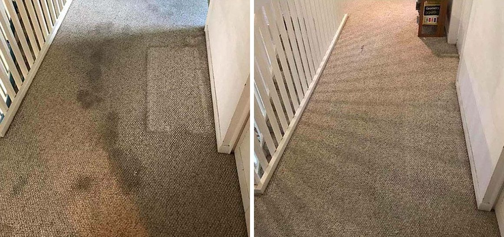

A good fit for
- Routine residential carpet cleaning
- Traffic lanes and everyday tracked-in soil
- Customers who want carpet back in use sooner
- Homes needing a clearly priced weekday visit
How the cleaning works
We use professional encapsulation chemistry and a counter-rotating brush machine to work through the carpet pile without heavily saturating it. Carpet typically dries in 1.5–2 hours.
The complete process
The goal is straightforward: understand the carpet first, loosen and agitate the soil, then finish the carpet cleanly without a long wet wait.
Traffic areas, spots, carpet condition, and any concerns are reviewed before work begins.
Professional cleaning solution is applied to begin loosening embedded soil.
Cleaning chemistry works with brush agitation to release soil from the carpet fibers.
Counter-rotating brushes work through the pile from multiple directions.
The carpet is given a final groom as appropriate, then typically dries in 1.5–2 hours.
Real completed work
This owned before-and-after image shows completed hallway carpet cleaning. Results vary with fiber, wear, soil, staining, prior treatment, and damage.
See more completed results →
BeforeAfterAn honest comparison
Cleaning methods are different tools for different situations. This is what customers can reasonably expect from the process used here.
| What changes | Low-moisture process used here | Heavily saturated methods |
|---|---|---|
| Moisture | Uses substantially less moisture and does not heavily saturate the carpet. | Introduces more water into the carpet during cleaning. |
| Dry time | Typically about 1.5–2 hours under ordinary conditions. | Varies by equipment, extraction, carpet, airflow, and conditions. |
| Mechanical action | Counter-rotating brushes agitate the carpet pile from multiple directions. | Agitation and extraction depend on the provider and method used. |
| Best decision | Useful when shorter dry time and a non-saturating process matter. | May be selected when a provider recommends a different method for the condition. |
No cleaning method can reverse permanent wear, fiber damage, bleaching, or every old stain or odor. Results and dry time vary with the carpet and conditions in the home.
Good fit, clear limits
Clear residential pricing
$75 covers general cleaning of up to three areas or rooms. The $99 standard package covers up to five rooms, two hallways, and one standard staircase. Pet-treatment options are $85 small or $149 standard. Every additional area, room, hallway, or staircase is $15. Plus applicable tax.
Helpful guides
Future weekday appointments
Housecall Pro shows the current schedule before you complete a booking.